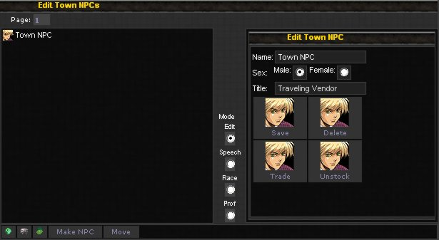
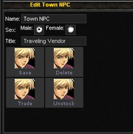
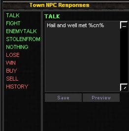
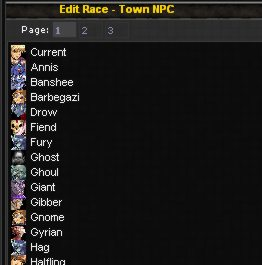
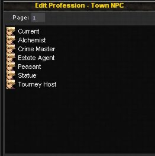

| |
As a Tile owner you can spawn NPCs in your tile, these are NPCs that act just like the system town NPCs (although not all of them are available).
To add or manage your NPCs goto the tile in question and then click the NPC button at the bottom of the screen.
If you wish to administer an NPC you placed into a building on your tile, use the Buildings button first and then choose the building and click the NPCs button.

The Mode toggles in the middle of the screen are used to determine what action you wish to perform, you select an action and then click on a NPC in the left side of the screen and the right of the screen will display the relevant action screen.
| Edit |
|  | This screen allows you to edit the name of the npc, and change its title and sex.
When you change the sex the picture used for the NPC will automatically change.
You can also use buttons here to Delete the NPC, take items from it and trade items to it.
This allows you to keep your NPC stocked with trade goods. |
| Speech |
This screen lets you set the various responses that your NPCs may say when talking or performing some action with a visiting character.
|  |
| Race |
|  | This screen allows you to change the race of the NPC, when you change the race its picture will automatically be adjusted to suit the new race. |
| Prof |
This screen lets you change the profession of the NPC this allows it to perform a different function when you click on it or a player talks to it.
|  |
| | |
|